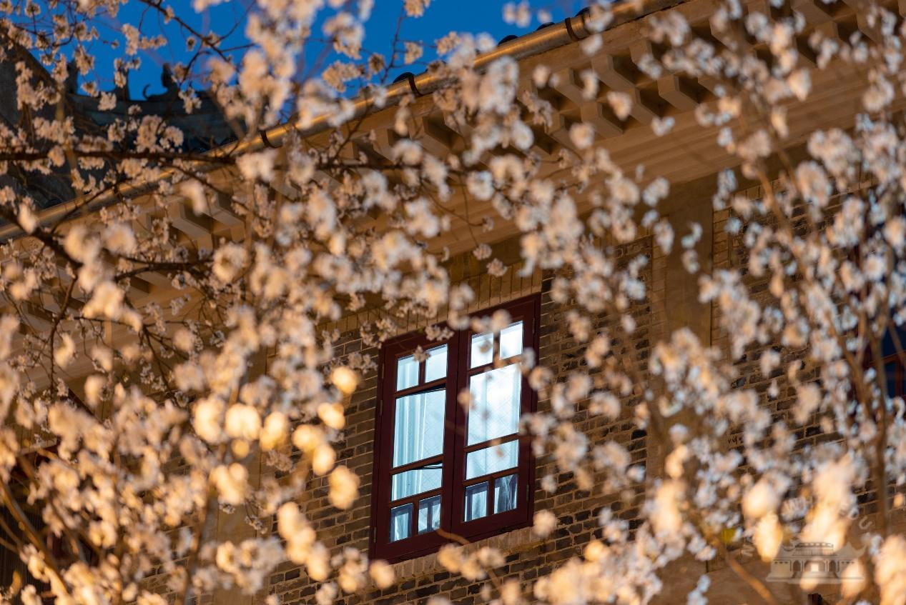
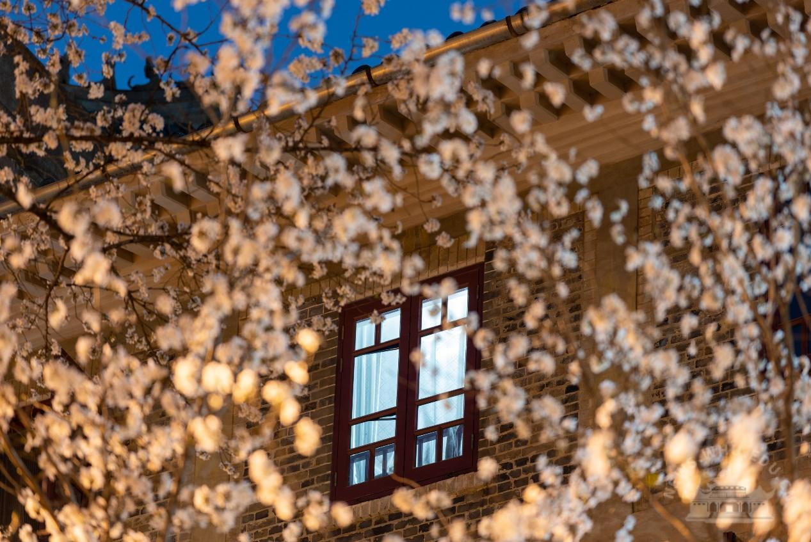

景点列表
推荐景点1--牌坊
武大正门，巍巍然矗立者，乃国立武汉大学之牌坊也。六柱冲天，五门洞开，气势恢宏，庄重典雅。坊额高悬，正面镌“国立武汉大学”，背面书“文法理工农医”六大学院名目，字迹遒劲，彰显学府之格局与追求。其造型融汇中西，既有传统牌楼之威仪，又具现代建筑之简练。历经沧桑，几度重修，始终为武大之精神图腾与地理坐标。学子于此入门，即入学术殿堂；游人至此瞻仰，顿生敬仰之情。牌坊矗立，不仅界分内外，更昭示着“明诚弘毅”的校训精神，是武大百年风华最雄浑的开篇序章。
推荐景点2--樱花
珞珈樱花，早已超越寻常花木，乃武大魂魄之华彩，春日最动人诗篇。其盛名远播，不仅因规模之宏，更因花事与学府气韵之交融。或植于大道两侧，夹道迎宾，织就漫天云锦；或伴于斋舍窗前，粉白掩映朱楼，平添几分书卷温柔；或立于山径之旁，临风照水，顾影自怜。花开时节，如霞蔚，似雪涌，短暂而极尽绚烂。落英时节，飞红成阵，铺地如毡，更有一种“质本洁来还洁去”的静美。学子行于花下，青春与芳华共舞；游人慕名而至，心醉于书香花海。一树樱花，见证岁月流转，承载无数学子情思，成为武大最温柔隽永的文化符号与时光印记。


 


推荐景点3--万林艺术博物馆
珞珈山麓，卓然而立者，万林艺术博物馆也。其形若天外飞石，又如凌云之帆，现代之姿，卓尔不群，与周遭古朴建筑相映成趣。银灰外壁，线条流畅，光影变幻间，尽显时代锋芒。此馆乃武大融汇古今、艺理兼修之新地标。馆内空间宏阔，展陈精妙，或藏历代文物珍宝，沧桑厚重；或纳现当代艺术杰作，先锋锐意；更有学人科研结晶，智慧璀璨。登临馆顶天台，俯瞰校园全貌，湖光山色尽收眼底，学府新颜与历史底蕴在此交汇。万林之立，不仅为庋藏珍品之所，更为启迪心智、激荡灵感、沟通科学与人文之桥梁，为百年学府注入蓬勃不息之艺术活力。